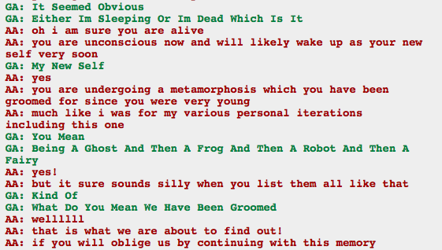

Kanaya isn’t dead! Kanaya is going to be okay! All is right with the world.
So this means they weren’t meant to ascend to god tier during their actual session. Although I guess “meant” isn’t necessarily the right word, since it’s as much the result of a time loop where the effects create cause and all sort of madness. Who knows if they were actually “groomed” for anything, or if it seems like they were because it’s inevitable.
And now, after painstaking explanation, I understand what’s going on with the Aradias.